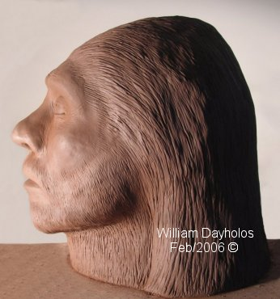
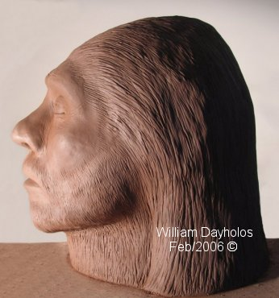
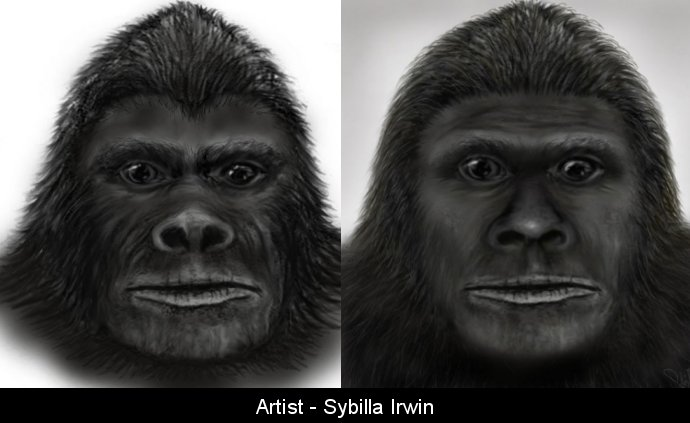
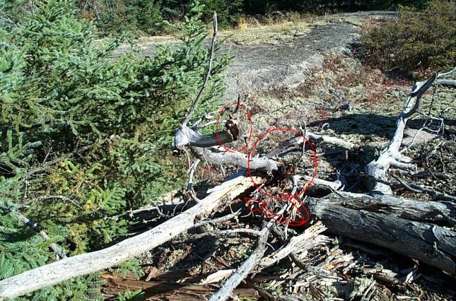
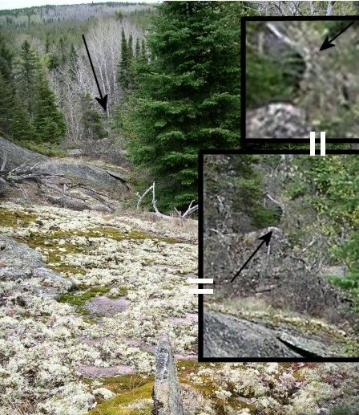

Remote Viewing - Comparing Accuracy of the Unknown
I started this Sasquatch Remote Viewing project in 2005
after experiencing some very unusual encounters in the Whiteshell area
of Manitoba, Canada. This was in 2004 and added up to five separate
encounters. I never saw the creatures but the sounds and results of its
presents were enough to arouse my curiosity.
 

Shown above is the visual result of this viewing work,
but like all work on targeted subjects much more was revealed. This is
typical when RVing a certain subject regardless of who or what they are.
This one is a female and is known as Beta - “Ba-Tta”.

Shown above are a couple of recent works (2010) from
the BFRO investigator/artists Sybilla Irwin. As you can see the remote
viewing was very accurate, considering the sketches are from actual
witness descriptions, many years after the sculpture’s creation. Links
to these reports are given below with the websites home page.
http://www.bfro.net/GDB/show_report.asp?id=18620
http://www.bfro.net/GDB/show_report.asp?id=28230
The BFRO website (my favourite site):
http://www.bfro.net/
Sasquatch Communication
(unedited)
A few years ago I tried to find a way of communicating with the sasquatch aspect. I was not that successful past the point of just having visualizations. In these remote viewing sessions I was presented with six or more snapshots of them. One was an older very intelligent looking female and the other individual was a young mature male with jet black hair. I had two views of this male, from its left shoulder as he walked and one in a squatting position at a rock edge off the Tie Creek valley.
Even after the visions and outdoor experiences it was obvious that my attempt to communicate was not working. So in my next session I went into a higher aspect of them, the soul aspect. I have had years of experiences working with this level on people. In fact I know of a woman who is getting good therapeutic results researching with a psychologist in communicating from this level with disturbed or schizophrenic people. In other words if you can't ’communicate effectively on this level (the physical) you need to go above this level to a point that is removed from the physical brain and its limitations. On these levels all communication takes place by virtue of “purity of common ground”.
It was at this point that I started to receive my lessons on communication that far surpassed just communicating with sasquatches. This level asked me to make a statement, and I did “What is your method of communicating?” After making this statement I was instructed to break it down into feelings. “What” I asked?..…The reply was “you have to feel curiosity not think it”.
The instructions went on; Start with the first of your words “What”…..it
means you feel curiosity…..so feel this curiosity, do not think it.
Start the projection to the other one. It is all about communicating
through feelings, just that simple but it’s not that easy…..try it!
Your second word: “your”…… (feeling their individuality, through them).
“communicating”…..(feel the process of talking and understanding or as hearing someone talk to you).
All this has to be felt, if you are a visual person don’t get involved with the visualizations, just feel what you see. This is what the problem has been all this time. They communicate through feelings as a language. We communicate through thought or mind thought. This is also why they are attracted to people that are clear and aware of their own feelings (children and females in general). If you are connected to your own feeling and honor them as such then they understand you and trust you. As soon as you start to think without feelings you lose them and become silent to them. This makes them nervous and untrusting of you. They are attracted to individuals that have feelings and are gentle. Gentle people by nature are ones in touch with their own feelings and are capable of projecting this into life. If you go silent (no feelings) it is perceived as something serious or menacing. Any communication outside of feelings with them is just noise or silence at best.
I know that there is always an equal exchange of energy in any contact no matter with who or what. This is a universal law of balance and equilibrium in any contract on any level. Knowing this law balance I had to question “what is there in this for the sasquatch aspect?” In other words who is getting what, in this exchange? The answer; For us they are here not to replace our form of communication, but to show us a higher level of communicating with ourselves as well as other life forms. There is an incredible opportunity to advance the human consciousness through this teaching. It is in this new level that other forms of learning and communicating will be born. This system of communication may appear as being very basic but it is a doorway into another evolved form of physical consciousness.
The first steps are to practice this and do it very slowly so that you are careful not to over look what feelings you are projecting. Feel through it, not think through it, and you will learn. I was told that this is also the way to communicate to whales and their genus.
I was told that there is a need for some sasquatches to actually seek out individuals that have this ability of communicating. So great is this attraction that they enter areas of danger for them, high populated areas in other words. There is no need to come into these areas for all they need is in the wilderness areas. They are coming into populated areas to make contact. I was also told that as a species they are the most empathic of all physicals including humans.
Sacred sites like Tie Creek are attractive areas for them because of the “type” of people that are interested in going there, the same goes with parks and areas of beauty. You don’t see too many “Hells Angels” visiting scared site. Sacred sites in themselves create emotional latent energy patterns known as vortexes. This is an attractive secure feeling for a sasquatch. This emotive empathic level of awareness is the reason for their historical survival. Comparing them to cultural humans, they are as compatible as oil as to water. This alone has given them the wide gap that was needed to survive.
In two of my encounters with them I was presented with offerings of a dead Spruce Grouse. I brought this up in the session as it did not make any sense how an empathic individual could kill so wastefully. I was told that this was the design as it allowed me to feel, the feeling of something so senseless. This was their way of showing me their understanding of what we feel about life itself. They felt from me the deep need to end this existence (that period of my life) and to them that is not compatible with life. They felt that if I could see this useless act that I could feel into myself as well as into them. The purpose was to challenge me. These grouse were not dead but were put into a different state to simulate death. This is a method that pheasant hunter guides know about. They would like to understand from us why there is such a need to kill. This is a challenge to them and something that they want to understand for their growth. Evolution is growth and there is no growth in stagnation. Even if this means a state of uncomfortably, it is still movement and movement is growth. There are benefits for them, but as can be expected at this point time it is all beyond our understanding.
It is interesting that the last time I was up into the Tie Creek area I had slipped and fell to the wet rock surface under me. It was shortly after this that we noticed a very foul smell that gave away the presents of a sasquatch. We were being watched all along, as my fall peeked the interest of one of these creatures. This was possibly a show of concern or emotional attachment, by it coming in closer. I had not put this together until I read a report on the BFRO site in which a similar experience had happened to a hunter. He had slipped falling to the ground and a sasquatch stood up near him, un-concealing itself showing concern for him. That is until the gun came up ending the encounter with the sasquatch screaming off into the woods. It just goes to show you the level of emotional ability that these creatures have and how empathic they are.
For these experiences what has worked for me the best is no guns, very few males and small numbers of people.
Part of a letter to a sasquatch co-worker:
After all the reading that I have done on this subject there is one
obvious conclusion that can be made. All the pictures (excluding a
studio photo) and plaster casts in the world will not prove anything to
the academic world. We need a body! No, I cannot shoot one, nor will I
support this concept. I have another solution that is not that easily
understood. A couple of months ago I asked this question as a thought;
what if there is a dead sasquatch up there (Manitoba Whiteshell) in any
condition? Going into a Remote Viewing session I asked the question and
saw a crude "nest" structure of branches and small trees. Inside this
structure was a mat of scraggly fur. As I looked at this mass I saw on
the top of the fur pile a white bone sticking out. This was a clear
vision and I was looking at a femur, the Greater Trochanter part (knee).
It appeared to be a mostly decomposed body, just hair and bones. For a
couple of months prior to that I have been drawn in my Remote Viewing to
this small ravine that enters into Tie Creek Valley. This is just
northeast of the Tie Creek Site. I have not been able to enter this area
with my RVing as if I was being blocked somehow. This made me even more
curious, but I did want to be respectful (there is also a native burial
ground near by) so I left it alone. Sometime after this blockage I was
still on the search and then it happened, I was allowed to enter. This
time I was there and it "felt" like I was in this burial spot, at the
junction of the two rock depressions. With the veil being lifted I have
gone back and seen a top crown of another skull mixed into the floor of
the bush and leaves, obviously much older in time duration, with no
surrounding "nest" structure. This might indicate a “grave yard” area of
some kind.
I have continued to Remote View the older one and have found out that it
is female. On two occasions I have R. Viewed and found her sleeping or
what felt like a semi hibernation. I say this because the last time
(Feb. 15th/05 7:00 PM it was -20 Celsius outside) she was
what appeared to be in some like of enclosure like a cave with two or
three more individuals very closely packed together.
It is my own theory but I do believe that there are sub species of the
creature across North American. This conclusion is based on my
experience and the reports that I read from across the continent. I feel
that the ones in the Whiteshell are more inquisitive and gentler than
the typical western ones.
I
totally believe that there are numerous variants in the population,
regional difference levels, and sub species levels. Form what I have
seen there are differences that vary greatly, like human appearance
does.
Alaskan Sasquatches
A letter to my Alaskan friend’s request -
As per your question about the Sasquatch community of the Alaskan coastal area we set up a journey together (my partner and I). It was very different in many ways than I’m use to seeing here in the Manitoba population. This group or community in your area is not interested in any human contact even from a distance. The one that I have experienced on the physical level here is very curious and has a need to learn. The ones up in your area (cannot say that for other areas south or east of you) appear to have a very introvert stance and are more than ready to defend this state. I had seven images come to me the first appeared to be a very large male who’s energy was overwhelming at first contact. This individual is projecting a strong dominant posture of defiance to all creatures that are not one with them. He feels so strong that I doubt if any grizzly in the area would take him up on his position. The scene shifted to a close up of a left eye form the side. From there I saw an older one from straight on at a distance (approx. 20 feet) the details were not that good. In the seven images, there were at least three individuals and two scenes sticking out as the most interesting and informative. The first was; watching one Sasquatch standing and (with two hands flat open) was eating or licking an object. Its elbows were bent with hands spread wide open holding what looked like a flat piece of bark. The bark appeared to be performing the same function as a dinner plate. I’m not suggesting that they use plates to eat. In its appearance, there was something good to eat that just happened to be on a piece of bark approx. 12 to 14 inches wide. It was half bent forward to do this and was licking at the material on the surface of the bark (more on this subject later). The last image blew my mind and answered many questions I have had over the description of these creatures. I was shown a close-up (if you were looking 10" away) of one of their noses. TOTALLY different than the ones I have seen in this area. It was almost identical in colour to a cow’s nose with it going into a darker shade towards the septum (the center part of the nose). There was one feature that was different and that was a fleshy ridge outlining the nose. This was in the form of a ridge that was of equal height to most of the other aspects of the nose. It is not like me to say this but, its appearance was nothing short of ugly. Then as I was looking at the ridge aspect, it moved and that was a big surprise. It did not move much but it was articulated in performance. This will go a long way in explaining the differences people see. I do believe that the facial structure I saw was too different for one species. Maybe it’s a subspecies or a very radical hereditary offshoot???
Now for the interpretation of it all from my partner’s insight:
This is very important to understand and heed. They (the ones in your area) do not want to have any contact and prefer to be left alone. This is not saying you cannot have an experience but it is saying to use caution if you expect anything to happen. They will have to be approached on their terms only. There is not concession or variance to this. My partner gave me a clear understanding of their ways and how to approach this. Most of this work will have to come from inside your mind (believe it or not). You will have to state a very clear intention to yourself and them (as a projection); what is your purpose and intention for this experience.
Things to do:
Make an offering in the form of food. Food is symbolically a universal nurturing/caring way of showing interest. Nuts or apples are recommended. With the nuts some are to be opened to show content and some are to be left whole. The offering must be repeated over a couple of attempts or more. The most important thing to do is to clear your mind (if you meditate as a practice this will be easy for you). You must not and cannot in your mind expect anything from them by this action. They will pick up your intent and it will drive them away more than attract them. They will not compromise even if you are in a giving way. In fact they will probably ignore the offering as a message symbol to you. Clear your mind on the drive there. Project out what your intent is; to show interest but with total distance and respect. Keep your mind clear of thoughts like; “Will they accept this, will they show themselves, will they hurt me, will they ignore this, will they”……. No judgment is so important if this is to work. Make the offering and leave the area, but project out to them that you will return so they are clear on your intent.
The following day or so, go back using the same sequence (do not do or add anything or anyone different) and check the offering. If it is gone, add to it and leave with the same thought of not expecting anything from them. If you bring a friend with you and are confident that they can support this method that is fine. If they can’t support this level, allow them to come to a certain distance and with you in sight of them continue on to the offering spot (if possible at a good distance). Project out to them that you will return so no misunderstandings are given.
This gift of food should be placed on a natural material like a large leaf or slab of bark (try not handling it too much). This is where my standing/licking vision came in, I think the vision I saw could possibly be from your future work with them (no guarantees of this).
(He asked were to start.)
As far as what area, I do have two suggestions. In the beginning of this journey I asked where? In writing this, I got the message that it could take place at your vehicle parking spot for the food offering. I also felt it should be on a shore line or beach area. The reason being that the Sasquatches need the security of knowing where you are (watching your approach and departure) for there is security and they have all the woods behind them.
Below are two diagrams; the one on the left is the nose I saw when remote Viewing and Alaskan Sasquatch. The right dawning was done by the artist RobRoy Menzies from my diagram.
What are they?
From this point I was shown that some humanoid species chose different
lines or directions in their evolution to “source”. After a development
stage and the realization of their desires they picked a path that is
different and in the opposite flow to modern human races. The early
Sasquatch’s need to explore nature’s balance drew them into a new
species that demanded more physical strength or animal type forms. The
Sasquatch is thus a hominid
that is evolving towards what we would see as an animal form. In other
words they are evolving into denser vibratory levels or the opposite
direction that we are. This is a conscious decision that takes place in
a parallel reality of space and time to us. In fact they could be placed
into a different reality as far as that goes, and one that will
eventually disappear from our ability to perceive. This is the reason
why some experiences are so surreal and during contact have the feeling
of detachment from our own reality. The experiences are thus ones where
time and space allows the two realities to find a common stage. Vortex
areas facilitate this alignment more efficiently than “normal”
landscapes.
Their ancestors used stone tools more than they currently have need for.
Essentially they are evolving away from tools and the reliance on them.
As the human vibration increases we too will eventually evolve out of
the reliance for tools in the physical. Through higher vibrational
flows, this takes human evolution into an opposite direction for its
source. This process will probably take a couple thousand years to
achieve.
A couple letters with details that I have received. Name X’d out for respect to them:
Dear Mr. Dayholos,
Please keep this email confidential. My name is XXXXX. I am 59 years of age and have been a Wildman experiencer since age 5. No, I am not part of the lunatic fringe in BF research. I do not research. What you call Sasquatch is actually a branch of the human family and their attitudes and behaviour differs greatly between regions. For the most part they are gentle and highly intelligent. Of all the Bigfoot researchers that I have been in contact with over the years, your sculpture is the only one which I have looked at that is absolutely accurate. You have them pegged down to the exact last detail. For what it is worth, I totally believe you when you say you remote view them. I do not have to, I have frequent contact with them. Sometimes, they come right up into my back yard. (I have a large, 8 acres, back yard.) Again, thank you for the accurate depiction. Most respectfully,
Bill,
Your sculpture looks more like early man, maybe these are some type of humans who never evolved. My wife and I saw one up close in Chesterfield County, Virginia in January, 1976. Its body was massive and it stood at least seven feet tall – bent over. My wife and I were sitting in our brand new 1976 Ford pick-up and it was touching the front hood of the truck. It was dark but I had just placed the high-beans on after sliding to a squealing stop. My wife saw the creature first and let out a blood curdling scream; had she not screamed – I might have hit it. In fact, I did not see it until it stepped in front of the right headlamp, and at that point my jaw dropped and perspiration began to bead up on my forehead and neck. We sat quietly for over a minute just watching “the beast” stand there motionless in front of us. The hair on the creature’s left arm and chest glistened as if its exterior were coated in glass. Finally, I asked XXXX, “What is that?!” Her immediate response was. “It’s a gorilla!” My reply was. “What’s a gorilla doing out here?” Nancy did not answer for a while because the creature had taken one step and was standing at the front center of the hood. At this point I noticed the hairy animal was holding its head down as though it were embarrassed or shy. Also, I noticed that its head was shaped more like a human’s than a gorilla’s. Looking at your sculpture, I would say it was very close to the head we saw, but its nose was not as pronounced as you have depicted it. I only got one chance to see its face straight-on and that was after it left the front of the truck and began to climb a small hill just to the front and left-hand side of the truck. Its face was longer than what you have sculptured and the eyes were not set back as far into its head. There seemed to be no hair from its forehead to its chin. Two things I noticed more than anything were its huge muscles under its hair and its extremely long arms.
When it began to climb the hill, it slipped but caught itself with its right fist. XXXX and I sat there in our truck shocked by what we had seen. She wanted to report the sighting to the police but I argued against it. We waited over 10 years before telling family members. Until we began to see television shows about Bigfoot sightings, we thought we had seen some kind of deformed gorilla. This happened near a small creek and some people in the deep South (people in Mississippi and Alabama) refer to them as creek monsters.. I never hunted in that area after that night. Thought you might want to know one family’s experience with this huge hairy creature.
Wood Knocking
In the spring of 2004 I took a group of people up to the Tie Creek area. Standing at the edge of a valley, I said to the group do you want me to try calling in a Sasquatch? I had read years ago that knocking on wood could produce an equal answer–response from a Sasquatch, if there was one in the area. They agreed so I picked up a large branch and struck it three times against a dried Jack Pine tree that was lying on the bed rock of the valley’s edge. After two series of three blows and no response from the valley below we started to leave the area. About four hundred yards into our trail (the one we just came down on) I came across my second incident of a dead grouse on a trail. It was like the first one a year earlier with its wings tucked in and laying straight, placed in the middle of our original trail that we just took to the valley’s edge. There was no noticeable rigor mortise so I reached down and stuck a finger under the wing into the breast feathers, it was still slightly warm. It was spring and still cool weather, enough to bring the temperature of this small body to atmospheric level within a half-hour, so I concluded that it had just been laid there. We finished this trip without any other incident.
I returned to the valley edge again two and half months later on August 20th to find that this dried pine tree was smashed to pieces. A bear is the only thing that would do this looking for grubs and insects. The problem is this tree is very dry and laying on a rock mantel not a place that would be conducive for insects to be interested in. Insects find homes in moist wood and humus or leaf mulch beds. Bear’s are lazy and will not make the effort unless they smell food. There was no reason for a bear to smash up this tree and twist off the branches. The main broken branch is a fork of this tree and was three feet off the rock with a diameter at the base of five inches. The branch was twisted around and snapped like a toothpick. This is would take an articulated hand to accomplish, not that of a bear. It would also take an incredible amount of strength. I realized at the time that this smashed tree was a calling card of some kind.
This is an extremely remote area and not even traveled by hunters. For more than twenty times that I have been up there I have never seen anyone, it is that remote.
I later Remote Viewed this smashed tree and saw what appeared to be a young adult male sasquatch shaking his arms and fists into the air above his head. The gesture did not appear friendly!
Shown below are the before and after photos of this smashed tree. (The undamaged tree photo is from my collection, taken a year prior)
Looking North

Looking South

Beta
View Larger Map
Back to the First Page of RVing Sculptures
The Schematic of Time
The Time Shaman
Bill Dayholos June 14 2011 ©